Web Worker 与 Service Worker 以及CacheStorage使用指北
概述
工作中用到两个iframe（兄弟关系）互相通信的问题，除了通过统一的父级之外，在思考还有没有其他更优解，这时候想到了Service Worker,既然谈到这个，那就重头捋一下，各种“woker”的前世今生。
谈到Web Worker 与 Service Worker，经常出现的高频词汇还有PWA，离线应用，缓存等，我们先了解下，这些名词的含义：
Application Cache
应用缓存，最早HTML5 规范中设计了应用缓存（Application Cache）这么一个新的概念。通过它，我们可以做离线应用。在控制台中我们也能发现它的身影：
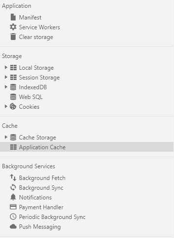
然而，由于这个 API 的设计有太多的缺陷，被很多人吐槽，最终被废弃。废弃的原因有兴趣的可以查看：为什么app cache没有得到大规模应用？它有哪些硬伤吗？
并且该特性已经从 Web 标准中删除，虽然一些浏览器目前仍然支持它，但也许会在未来的某个时间停止支持，请尽量不要使用该特性（源自MDN 描述）。
CacheStorage
为了能够精细地、可编程地控制缓存，CacheStorage 被设计出来。有了它，开发者就可以用 JS 对缓存进行增删改查。MDN web docs上是这么定义的：
CacheStorage 接口表示 Cache 对象的存储。它提供了一个 ServiceWorker 、其它类型worker或者 window 范围内可以访问到的所有命名cache的主目录（它并不是一定要和service workers一起使用，即使它是在service workers规范中定义的），并维护一份字符串名称到相应 Cache 对象的映射。
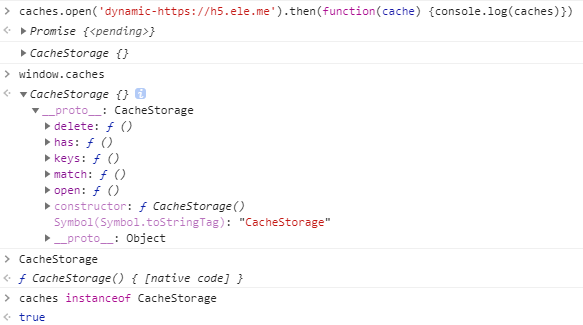
Web Worker
JS是单线程的，并且与 GUI 渲染线程是互斥的(想了解更多请点我), 如果进行一些密集型或耗时计算，UI页面会被阻塞住（或放慢），进入“假死”状态，这时 Web Workers 便诞生了。Web Worker属于HTML5的标准，ECMAScript中并没有，换言之就是nodejs中并不存在各种“woker”。他有如下特点：
- 同源限制：分配给 Worker 线程运行的脚本文件，必须与当前站点域名一致,且无法加载本地文件。
- DOM 限制：无法读取主线程所在网页的 DOM 对象，但可以读取navigator对象和location对象。
- Web Worker只能服务于新建它的页面，不同页面之间不能共享同一个 Web Worker（如需共享需使用Shared Worker）。
- 当页面关闭时，该页面新建的 Web Worker 也会随之关闭，不会常驻在浏览器中。
下面我们通过一个实际的例子来说明：
html文件逻辑如下（省略部分公共部分）：
<input type="number" id="ipt">
<button id="btns">发送</button>
<button id="close">关闭worker</button>
<ul class="list">
<p>执行结果为：<b></b></p>
</ul>
<script type="text/javascript">
var worker= new Worker('ww.js')
worker.onmessage= e=>{
$(".list b").text($("#ipt").val()+" x 100 = "+e.data)
console.log("worker run result is "+e.data)
}
$("#btns").click(()=>{
var num=$("#ipt").val();
console.log("send data is "+num)
worker.postMessage(num)
})
$("#close").click(()=>{
console.log("---worker is close---")
worker.terminate();
})
</script>
执行的worker文件ww.js，代码如下：
this.onmessage=e=>{ //self和this都代表线程本身，也可省略不写
const message=e.data;
console.log("web worker get message")
self.postMessage(message*100)
}
得到执行结果为：
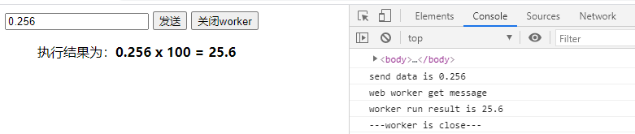
- 主线程采用new命令，调用Worker()构造函数，新建一个 Worker 线程
- worker线程与主线程之间通过postmessage与onmessage完成通信
- 然woker线程也可以关闭自身：
self.close()
在控制台此处可以看到ww.js中的代码（Network中也可以看到ww.js的请求）
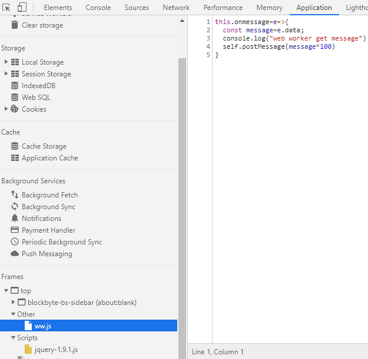
Shared Worker
上面提到 Web Worker 无法共享的问题，Shared Worker可以说就是专门解决此问题而出现的。它可以创建一个执行指定 url 脚本的共享 web worker。不过这些页面必须是同源的（相同的协议、host 以及端口）
依旧创建两个页面进行测试（share 与 share2，代码基本一致）：
<input type="text" id="ipt">
<button id="btns">发送消息</button>
<button id="close">关闭worker</button>
<ul class="list">
<p>对话消息列表1：</p>
</ul>
<script type="text/javascript">
var worker= new SharedWorker('swk.js',"share-worker-v1");
worker.port.start();
worker.port.onmessage= e=>{
console.log(e)
$(".list").append("<li style='color:red'>worker回："+e.data+"</li>")
}
$("#btns").click(()=>{
const val=$("#ipt").val()
$(".list").append("<li style='color:red'>share1问："+val+"</li>")
worker.port.postMessage(val)
})
$("#close").click(()=>{
console.log("---worker is close---")
worker.port.close()
})
</script>
执行的 Share Worker文件swk.js，代码如下：
this.onconnect = function(e) {
var port = e.ports[0];
port.onmessage = function (e) {
console.log(e)
port.postMessage("Hi! "+e.data)
}
}
执行结果：
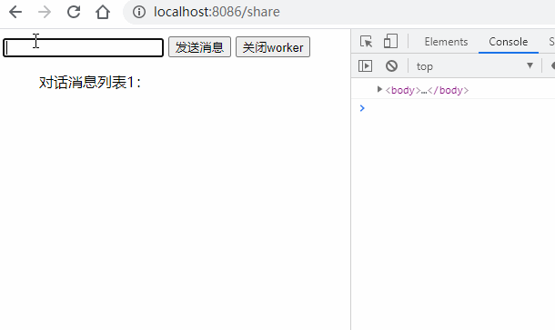
可以发现：
- 通过构造函数
SharedWorker来创建Share Worker。 - 创建的 Share Worker 可以在多个页面运行，且互不干扰，各自监听各自的端口。
- 关闭当前页面的 share worker 并不会影响其他页面worker正常运行。
- 只有运行Share Worker的所有页面关闭，Share Worker也会自动关闭。
- share worker的执行可以通过
chrome://inspect/#workers进行调试，当前页面无法调试（Network中不会出现swk.js文件）
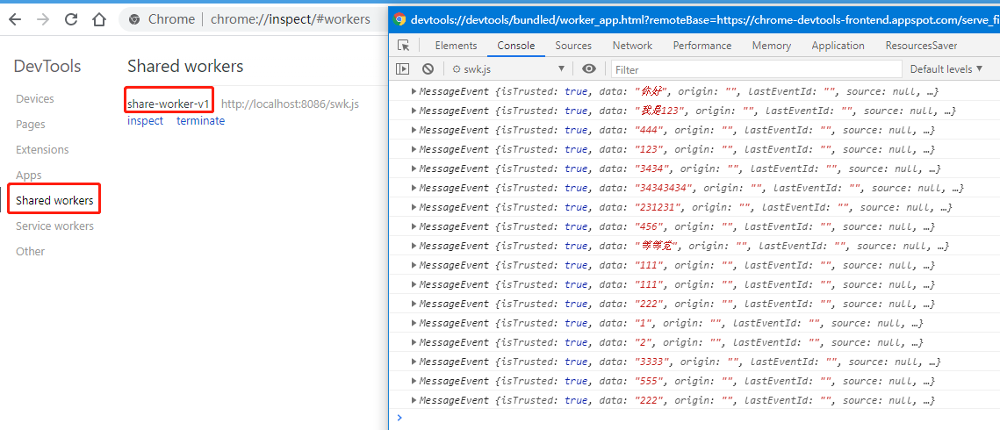
我们将swk.js文件稍加改造，设置为广播模式，所有页面均可”共享”数据了
const clients=[]
this.onconnect = function(e) {
var port = e.ports[0];
clients.push(port)
port.onmessage = function (e) {
clients.map((item)=>{
item.postMessage(e.data)
})
}
}
此时我们在share页面与share2页面分别根据消息类型做不同的判断，即可获取对方页面的数据，实现”共享”：
// share页面，share2页面与之类似
worker.port.onmessage= e=>{
if(e.data && e.data.type=='b'){
$(".list").append("<li style='color:red'>接受到share2消息："+e.data.msg+"</li>")
}
}
$("#btns").click(()=>{
const val=$("#ipt").val()
$(".list").append("<li style='color:red'>share1发送："+val+"</li>")
worker.port.postMessage({
type:"a",
msg:val
})
})
运行结果：
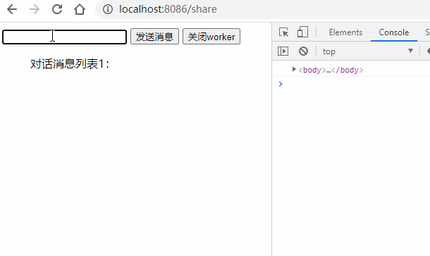
Service Worker
Service Worker 与 Web Worker 相比，相同点是：它们都是在常规的 JS 引擎线程以外开辟了新的 JS 线程。不同点主要包括以下几点：
- Service Worker 不是服务于某个特定页面的，而是服务于多个页面的。（按照同源策略）
- Service Worker 会常驻在浏览器中，即便注册它的页面已经关闭，Service Worker 也不会停止。本质上它是一个后台线程，只有你主动终结，或者浏览器回收，这个线程才会结束。
- 生命周期、可调用的 API 等等也有很大的不同。
创建
Service Worker必须是https协议的（本地服务可以为http），里面大量使用Promise来设计，且基本不能使用同步接口（localStorage与sessionStorage）,他的基本生命周期如下：
- Download – 下载注册的JS文件
- Install – 安装
- Activate – 激活
可以通过对应API监听到以下几种状态：
installing → installed → activating → activated
只有处于activated 状态时才可正常使用。
参照张鑫旭的代码，我们创建一个Service Worker：
if ('serviceWorker' in navigator) {
// 开始注册service workers
navigator.serviceWorker.register('sw.js').then( (registration)=> {
console.log('注册成功');
var serviceWorker;
if (registration.installing) {
serviceWorker = registration.installing;
console.log('installing');
} else if (registration.waiting) {
serviceWorker = registration.waiting;
console.log('waiting');
} else if (registration.active) {
serviceWorker = registration.active;
console.log('active');
}
if (serviceWorker) {
$('#swState').text(serviceWorker.state);
serviceWorker.addEventListener('statechange', function (e) {
$('#swState').append(' 状态变化为' + e.target.state);
});
}
}).catch ((error) =>{
console.log('注册失败');
});
}
执行结果为：
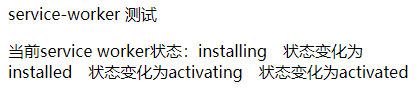
通信
在此基础上测试下Service Worker的通信功能，修改html文件：
btns.addEventListener('click',()=>{
console.log("send message to service!!")
navigator.serviceWorker.controller.postMessage("Hi!");
});
navigator.serviceWorker.addEventListener("message", function(event) {
console.log("***main process get message***")
console.log(event.data)
});
sw.js文件内容为：
self.addEventListener("message", function(event) {
console.log("--- service get data ---")
self.clients.matchAll().then((clientList)=>{
clientList.forEach(client => {
client.postMessage("Hello service,I get you message:"+event.data)
})
})
});
我们再次执行，此处有个小插曲，就是sw.js文件的更新，需要在控制台中手动进行Unregister操作，否则无法更新Service Worker中的代码，在sw.js文件后面加时间戳也只会进入waiting状态：
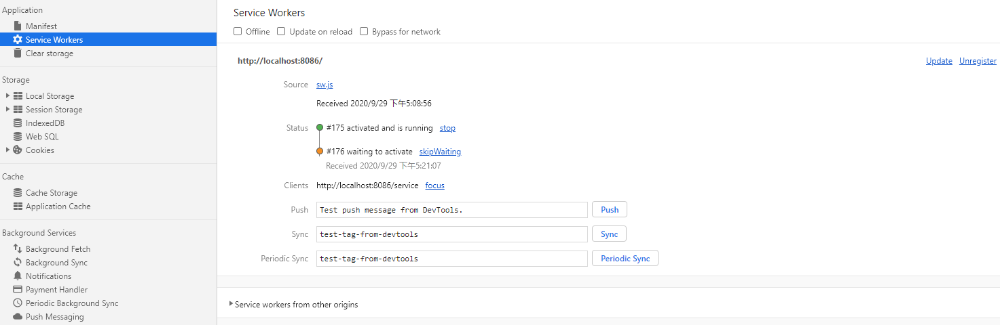
也可结合业务实现自动更新，参见：谨慎处理 Service Worker 的更新，此处不再赘述。
接着上面的代码，重新执行后，点击按钮向service worker发送消息：
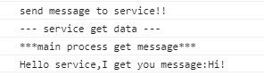
拦截请求
Service Worker 可以拦截页面的所有的请求（包括图片，静态资源，ajax）,在sw.js中增加监听:
self.addEventListener('fetch', function(event) {
console.log("拦截请求~")
console.log(event)
});
此时页面发出的请求均会被拦截到：
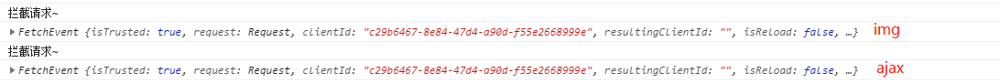
应用范围
Service Worker因为可以常驻浏览器，所以很多时候被拿来做缓存应用，可以参照张鑫旭童鞋的demo，Service Worker其实只是开了一个后台线程，所以具体怎么用，全凭与其他api的配合使用:
- 与 Fetch 搭配，可以从浏览器层面拦截请求，做数据 mock；
- 与 Fetch 和 CacheStorage 搭配，可以做离线应用；
- 与 Push 和 Notification 搭配，可以做类似 Native APP 的消息推送
Service Worker 是 Web Worker 进一步发展的产物，从其起步至今也不过两三年的时间，尚处在发展期，希望今后更加完善与易用。